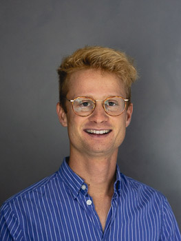

Pierre-Paul De Breuck
-
Postdoctoral researcher at the Interdisciplinary Centre for Advanced Materials Simulation (ICAMS) at Ruhr-Universität Bochum. Collaborating Alumni at Mila under supervision of Prof. Yoshua Bengio. Previously Ph.D. Student at UCLouvain in the group of Prof. Gian-Marco Rignanese at the Institute of Condensed Matter and Nanosciences.
- Driven by the desire to discover more environmentally friendly materials for photovoltaics, batteries, and electrocatalysis, and more in our effort to combat climate change.
- Computational materials scientist specialized in AI for materials discovery: high-throughput screening, materials property prediction, AI agents for active learning campaigns and generative models.
- Please find my resume